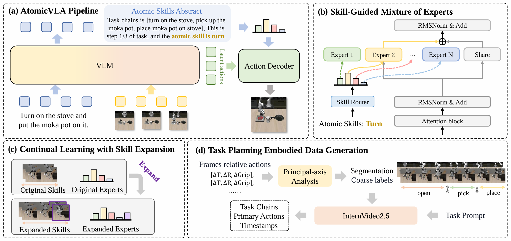

Recent advances in Visual-Language-Action (VLA) models have shown promising potential for robotic manipulation tasks. However, real-world robotic tasks often involve long-horizon, multi-step problem-solving and require generalization for continual skill acquisition, extending beyond single actions or skills. These challenges present significant barriers for existing VLA models, which use monolithic action decoders trained on aggregated data, resulting in poor scalability. To address these challenges, we propose AtomicVLA, a unified planning-and-execution framework that jointly generates task-level plans, atomic skill abstractions, and fine-grained actions. AtomicVLA constructs a scalable atomic skill library through a Skill-Guided Mixture-of-Experts (SG-MoE), where each expert specializes in mastering generic yet precise atomic skills. Furthermore, we introduce a flexible routing encoder that automatically assigns dedicated atomic experts to new skills, enabling continual learning. We validate our approach through extensive experiments. In simulation, AtomicVLA outperforms π0 by 2.4% on LIBERO, 10% on LIBERO-LONG, and outperforms π0 and π0.5 by 0.22 and 0.25 in average task length on CALVIN. Additionally, our AtomicVLA consistently surpasses baselines by 18.3% and 21% in real-world long-horizon tasks and continual learning. These results highlight the effectiveness of atomic skill abstraction and dynamic expert composition for long-horizon and lifelong robotic tasks.

(a) AtomicVLA Pipline. AtomicVLA is a framework that unifies task planning and action execution. The VLM adaptively predicts atomic skill abstraction and latent action. Action Decoder in the SG-MoE architecture receives both the latent action and the newly inferred atomic skill abstraction, and generates fine grained motor actions. (b) Skill-Guided Mixture of Experts. SG-MoE includes a skill router, a shared expert, and multiple atomic-skill experts. The router selects the top skill expert based on the atomic skill, and the action token is processed by both the activated skill expert and the shared expert. (c) Continual Learning with Skill Expansion. New skills are added by training only the new expert and extending the router. (d) Task Planning Embodied Data Generation. High-quality embodied reasoning data are generated using principal-axis analysis with InternVideo2.5 model.